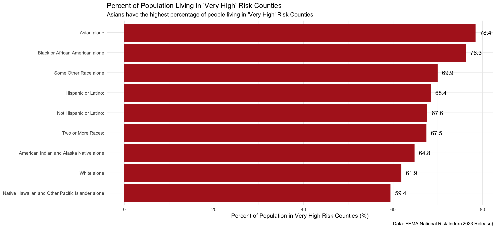

── Conflicts ────────────────────────────────────────── tidyverse_conflicts() ──
✖ dplyr::filter() masks stats::filter()
✖ dplyr::lag() masks stats::lag()
ℹ Use the conflicted package (<http://conflicted.r-lib.org/>) to force all conflicts to become errors
library(ggplot2)
Data Cleaning
# #....Step 1a: see all available ACS variables + descriptions.....# acs_vars <- tidycensus::load_variables(year = 2023,# dataset = "acs1")# # #..............Step 1b: import race & ethnicity data.............# race_ethnicity <- tidycensus::get_acs(# geography = "county",# survey = "acs1",# # NOTE: you may not end up using all these variables# variables = c("B01003_001", "B02001_002", "B02001_003", # "B02001_004", "B02001_005", "B02001_006",# "B02001_007", "B02001_008", "B03002_012",# "B03002_002"),# state = "CA", # year = 2023) |># # join variable descriptions (so we know what's what!)# dplyr::left_join(acs_vars, by = dplyr::join_by(variable == name)) # # #.................Step 2: write ACS data to file.................# readr::write_csv(race_ethnicity, here::here("data", "ACS-1yr-2023-county-race-ethnicity.csv"))#..................Step 3: read in your CSV file.................race_ethnicity <-read_csv(here::here("data", "ACS-1yr-2023-county-race-ethnicity.csv"))|> janitor::clean_names()
Rows: 420 Columns: 7
── Column specification ────────────────────────────────────────────────────────
Delimiter: ","
chr (5): GEOID, NAME, variable, label, concept
dbl (2): estimate, moe
ℹ Use `spec()` to retrieve the full column specification for this data.
ℹ Specify the column types or set `show_col_types = FALSE` to quiet this message.
Warning: One or more parsing issues, call `problems()` on your data frame for details,
e.g.:
dat <- vroom(...)
problems(dat)
Rows: 3232 Columns: 467
── Column specification ────────────────────────────────────────────────────────
Delimiter: ","
chr (67): National Risk Index ID, State Name, State Name Abbreviation, Stat...
dbl (396): OBJECTID, Population (2020), Building Value ($), Agriculture Valu...
lgl (4): Coastal Flooding - Number of Events, Earthquake - Number of Event...
ℹ Use `spec()` to retrieve the full column specification for this data.
ℹ Specify the column types or set `show_col_types = FALSE` to quiet this message.
Data Preporation
# Prepare risk_index for join# Filter for CaliforniaCA_risk_index <- risk_index |>filter(`state_name`=="California")
# Prepare race_ethnicity for join# Remove " County, California$" from every row in name columnrace_ethnicity$name <-gsub(" County, California$", "", race_ethnicity$name)# Remove "!!" from every label columnrace_ethnicity$label <-gsub("!!", "", race_ethnicity$label)# Rename name column to county_namerace_ethnicity <- race_ethnicity |>rename(county_name = name )
# Left join race_ethnicity to CA_risk_index by county_namerisk_ethnicity_joined <- CA_risk_index |>left_join(race_ethnicity, by ="county_name", relationship ="one-to-many") |># Select necessary columnsselect(state_name, county_name, population_2020, national_risk_index_rating_composite, national_risk_index_score_composite, estimate, label, concept)
# filter our rows with "EstimateTotal" and remove "EstimateTotal:" from all rows in label columnclean_risk_ethnicity_joined<- risk_ethnicity_joined |>filter(label !="EstimateTotal") |>mutate(label =gsub("EstimateTotal:", "", label))
# Group by label and calculate percentage of population in each ethnic group in counties with a "very high" risk indexrisk_by_race <- clean_risk_ethnicity_joined |>group_by(label) |>summarize(total_pop =sum(estimate, na.rm =TRUE),very_high_pop =sum(estimate[national_risk_index_rating_composite =="Very High"], na.rm =TRUE),pct_very_high =100* very_high_pop /sum(estimate, na.rm =TRUE) )
Data Visualization
risk_by_race |>ggplot(aes(x =reorder(label, pct_very_high), y = pct_very_high)) +geom_col(fill ="firebrick") +labs(title ="Percent of Population Living in 'Very High' Risk Counties",subtitle ="Asians have the highest percentage of people living in 'Very High' Risk Counties",y ="Percent of Population in Very High Risk Counties (%)",caption ="Data: FEMA National Risk Index (2023 Release)" ) +coord_flip() +theme_minimal() +theme(axis.title.y =element_blank()) +geom_text(aes(label =round(pct_very_high, 1), hjust =-0.4))

V. Answer some questions
What are your variables of interest and what kinds of data (e.g. numeric, categorical, ordered, etc.) are they (a bullet point list is fine)?
How did you decide which type of graphic form was best suited for answering the question? What alternative graphic forms could you have used instead? Why did you settle on this particular graphic form?
I decided to choose a bar graph because it clearly shows the difference in populations between ethnic groups living in “Very High” risk counties. I alternatively could have chosen a lollipop graph, but I don’t think its necessary because there aren’t that many groups. This type of a graph is more familiar to most people, so its more comprehensible.
Summarize your main finding in no more than two sentences.
Asians have the highest percentage of people living in ‘Very High’ Risk Counties. Pacific islanders/Native Hawaiians and White people have the least percentage of people living in ‘Very High’ Risk Counties.
What modifications did you make to this visualization to make it more easily readable?
I made my plot wider and taller, made my bars dark red, put ethnic groups on the y axis, and added percentage values to the end of each bar.
Is there anything you wanted to implement, but didn’t know how? If so, please describe.
I want to make the text on y axis the same size as y axis.